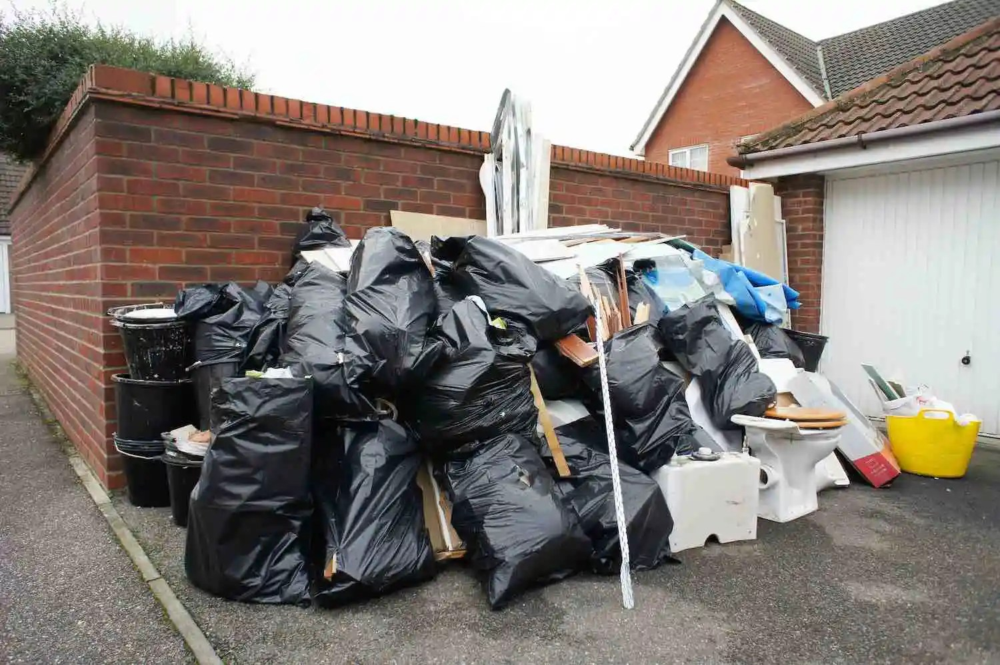

Areas We Serve
Proudly serving Austin and 15+ surrounding cities with professional junk removal and hauling services.
Service Areas
Junk Removal Services Across Central Texas
We're proud to serve Austin, TX, and the surrounding areas with our quality junk removal, hauling, and cleanout services.
Austin, TX
Round Rock, TX
Cedar Park, TX
Pflugerville, TX
Georgetown, TX
Kyle, TX
Leander, TX
Buda, TX
Bastrop, TX
Killeen, TX
Temple, TX
Belton, TX
San Marcos, TX
New Braunfels, TX
Harker Heights, TX
Central Texas Coverage
Junk Haul Off Texas provides full-service junk removal across Austin and all surrounding cities. No matter where you're located in Central Texas, we're just a phone call away.
Our fleet of trucks covers the entire Austin metro area and beyond. We regularly service Williamson County, Travis County, Hays County, Bell County, Comal County, and Bastrop County.
Not sure if we serve your area? Give us a call at (512) 436-6298 — we probably do!
Call (512) 436-6298